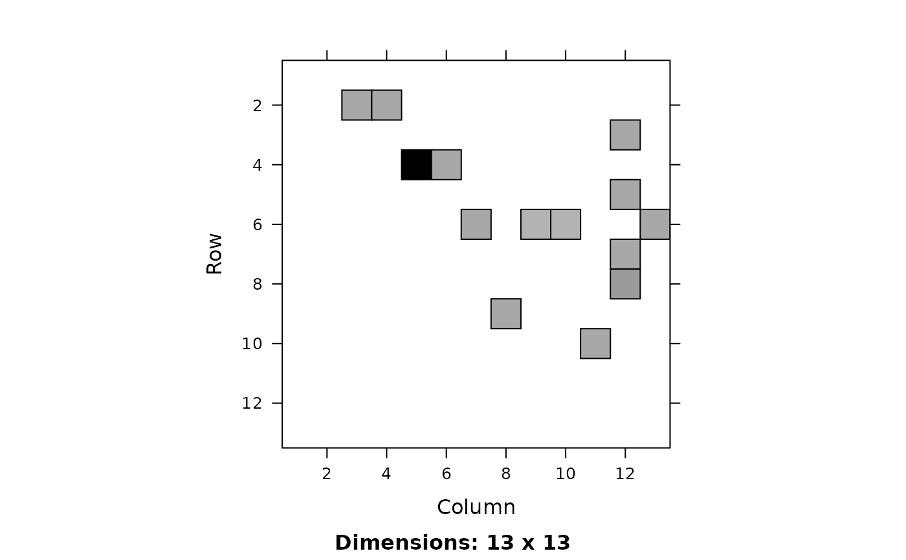

Defines rates (per day) of flow from compartment i
(row) to compartment j (column).
make_ratemat( state, params, do_ICU = TRUE, sparse = FALSE, symbols = FALSE, indices = FALSE )
| state | named vector of states |
|---|---|
| params | named vector of parameters |
| do_ICU | include additional health utilization compartments |
| sparse | return sparse matrix? |
| symbols | return character (symbol) form? (FIXME: call adjust_symbols here rather than in show_ratemat()?) |
| indices | return indices for lower-level stuff? |
matrix of (daily) transition rates
The rates are as follows:
\( S to E: - (\beta_0 / N) S (C_a I_a + C_p I_p + (1-iso_m)C_m I_m + (1-iso_s)C_s I_s) \) \( E to I_a: \) \( E to I_p: \) \( ... \)
See read_params for parameter definitions.
Base version matches structure of Stanford/Georgia models
flow diagram: see http://covid-measures.stanford.edu/ 'model details' tab
or ../pix/model_schematic.png
parameter definitions: see params_CI_base.csv, params_ICU_diffs.csv
params <- read_params("ICU1.csv") state <- make_state(params[["N"]],E0=params[["E0"]], use_eigvec=FALSE) M <- make_ratemat(state,params) if (require(Matrix)) { image(Matrix(M)) }make_ratemat(state,params,symbols=TRUE)#> to #> from S E Ia #> S "0" "sum(beta_vec * state[names(beta_vec)])" "0" #> E "0" "0" "alpha * sigma" #> Ia "0" "0" "0" #> Ip "0" "0" "0" #> Im "0" "0" "0" #> Is "0" "0" "0" #> H "0" "0" "0" #> H2 "0" "0" "0" #> ICUs "0" "0" "0" #> ICUd "0" "0" "0" #> D "0" "0" "0" #> R "0" "0" "0" #> X "0" "0" "0" #> to #> from Ip Im Is #> S "0" "0" "0" #> E "(1 - alpha) * sigma" "0" "0" #> Ia "0" "0" "0" #> Ip "0" "mu * gamma_p" "(1 - mu) * gamma_p" #> Im "0" "0" "0" #> Is "0" "0" "0" #> H "0" "0" "0" #> H2 "0" "0" "0" #> ICUs "0" "0" "0" #> ICUd "0" "0" "0" #> D "0" "0" "0" #> R "0" "0" "0" #> X "0" "0" "0" #> to #> from H H2 #> S "0" "0" #> E "0" "0" #> Ia "0" "0" #> Ip "0" "0" #> Im "0" "0" #> Is "(1 - nonhosp_mort) * phi1 * gamma_s" "0" #> H "0" "0" #> H2 "0" "0" #> ICUs "0" "psi1" #> ICUd "0" "0" #> D "0" "0" #> R "0" "0" #> X "0" "0" #> to #> from ICUs #> S "0" #> E "0" #> Ia "0" #> Ip "0" #> Im "0" #> Is "(1 - nonhosp_mort) * (1 - phi1) * (1 - phi2) * gamma_s" #> H "0" #> H2 "0" #> ICUs "0" #> ICUd "0" #> D "0" #> R "0" #> X "0" #> to #> from ICUd #> S "0" #> E "0" #> Ia "0" #> Ip "0" #> Im "0" #> Is "(1 - nonhosp_mort) * (1 - phi1) * phi2 * gamma_s" #> H "0" #> H2 "0" #> ICUs "0" #> ICUd "0" #> D "0" #> R "0" #> X "0" #> to #> from D R X #> S "0" "0" "0" #> E "0" "0" "0" #> Ia "0" "gamma_a" "0" #> Ip "0" "0" "0" #> Im "0" "gamma_m" "0" #> Is "nonhosp_mort * gamma_s" "0" "M[pfun(\"Is\", \"H\", M)]" #> H "0" "rho" "0" #> H2 "0" "psi3" "0" #> ICUs "0" "0" "0" #> ICUd "psi2" "0" "0" #> D "0" "0" "0" #> R "0" "0" "0" #> X "0" "0" "0"